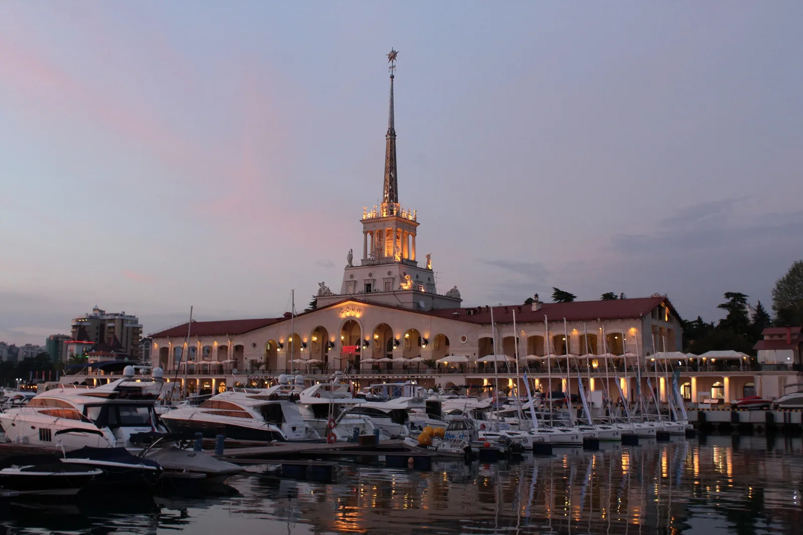

Глава седьмая
1955
Морской вокзал
После войны курорту понадобились новые ворота — с моря.
Морской порт Сочи

Морской порт Сочи. Вечер, сегодня
Временный кадр до съёмки на точке. Фото: Carbonkidka, 2017, CC BY-SA 4.0


1957
Архивный снимок, PastVu № 2558141
2014
Фото: Юлия Небышинец, CC BY-SA 4.0
Фонтан со скульптурой «Навигация» перед вокзалом, 1957 годЛистайте: архивный снимок растворится в сегодняшнем
Одна точка съёмки, между кадрами 57 лет
Тот же фонтан, 2014 годПересъёмку 2026 года оператор сделает с этой же точки
Вокзал со шпилем задумали ещё до войны, а открыли 15 декабря 1955 года. Он встречал теплоходы и стал визитной карточкой Сочи.

«Здание Морского вокзала, построенное в 1955 году по проекту К. С. Алабяна и Л. Б. Карлика, увенчано 71-метровой башней со шпилем. Над тремя её ярусами установлены скульптуры, олицетворяющие времена года и стороны света».
Значение для Сочи
Символ города на открытках, марках и значках.
Значение для России
Пример послевоенного восстановления и развития морского транспорта.
Раздел курса: 2. Российское государство-цивилизация
Ценность: созидание и развитие

Факт, который мало кто знает
Стройку прервала война. На снимке 1952–1953 годов видно, как возводят стены и опоры здания.
Строительство Морского вокзала, 1952–1953. Фото: Соловьёв, МКУ «Архив города Сочи», PastVu № 2095347